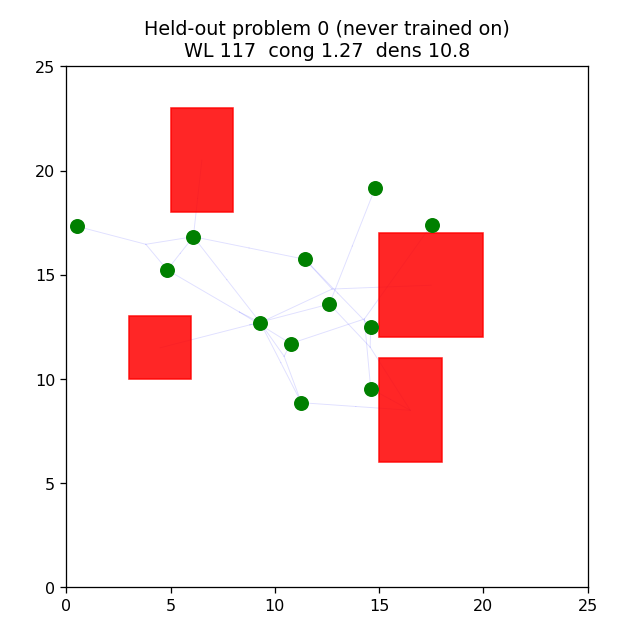
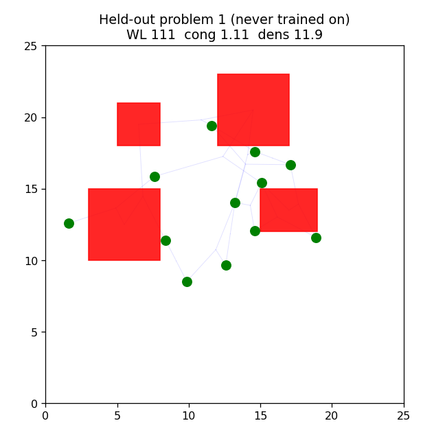

Replacing the flat observation with a Graph Neural Network (GNN) over the netlist, the paper's key innovation, and an honest measurement of whether it helps at this scale.
V3 gave the policy a flat observation, which cannot represent netlist structure, and it generalized only marginally (3% over random on held-out problems). V4 replaces that with a graph observation (nodes are macros and clusters, edges are shared nets) and a GNN feature extractor: two graph-convolution layers of message passing produce node embeddings, from which the policy reads the current macro's embedding, a global graph embedding, and features of the occupancy grid. The intent is exactly the paper's: give the policy a representation of connectivity so it generalizes across netlist structures.
| Policy | Held-out improvement over random |
|---|---|
| V3 flat MLP (Multi-Layer Perceptron) | ~3% |
| V4 GNN | ~0.9% |


The GNN machinery is built and integrated correctly (a custom message-passing feature extractor inside MaskablePPO, on a graph observation). The honest lesson is that realizing a GNN's benefit for placement requires the paper's architectural specifics (a deconvolution action head) and substantially more compute, not just the presence of a graph encoder. That is a more accurate understanding of the method than an uncritical reproduction would give.
Next steps to realize the GNN's benefit: a deconvolution action head (graph embedding to a placement-probability grid, as in the paper); much longer training with working parallel environments or more compute; and eventually transfer pre-training across problems. Beyond that: OpenROAD evaluation and a rigorous comparison against classical placers.
See the repository README and RESULTS.md for the full arc.